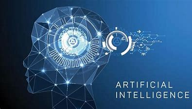

AI's(artificial intelligence) is one of the biggest advances in technology humans have ever made. AI's are made to make things in everyday life easier, things like solving problems and playing games and being an assistant on our phone. But in the future scientists like Elon Musk are working to give them a more prominent role in human life. We are slowly seeing this already with Tesla’s having a self-driving function, but a human is still required to be attentive on the road. Furthermore, Elon musk is also working on the Tesla bot that will eliminate boring and repetitive tasks that us humans do everyday. I personally will not be buying one because will feel uncomfortable with something with camera and the ability to break things walking around my house.
With the advancement of Ai’s there are those who are obviously against it. There are those who believe in the Robot taking over and believe that we are on track to the apocalyptic future where robots rule. The more realistic people are afraid because of the loss of jobs and Ai being put in the wrong hands and being used for intrusive and dangerous purposes.
Personally I feel like it's good to an extent that we are making techonolgy useful, but as technology Advances towards the point where it can be used as a weapon, people should design them with keeping in mind the dangers of how they can be used. But beside all that, Ai’s can be used to help us eliminate repetitive tasks and help us with little things. Hopefully Ai’s can be used to help humans with bigger issues other than finding direction to the nearest Mcdonalds.